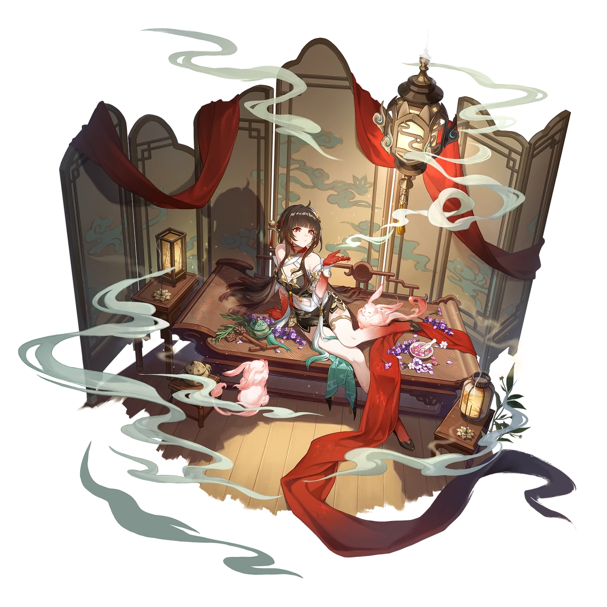
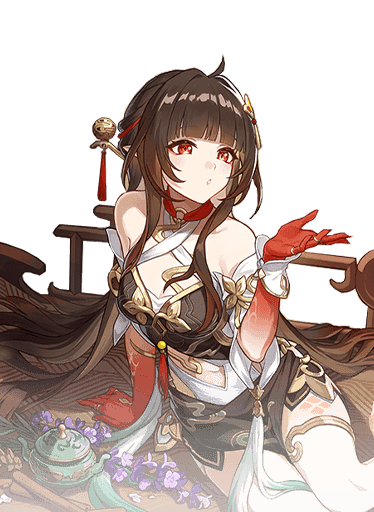

Descripcion del personaje
es una hábil curandera Vidyadhara en Honkai: Star Rail. Actualmente ocupa el puesto de Maestra del Caldero en la Comisión de Alquimia de Xianzhou Luofu, destacándose en el uso de incienso para calmar mentes y diagnosticar enfermedades a través de un agudo sentido del olfato. Aunque mantiene una apariencia tranquila, su pasado está marcado por decisiones difíciles y una relación complicada con su antigua maestra, a quien acompañó al exilio antes de regresar con una identidad renovada
Como Maestra del Caldero en la Comisión de Alquimia, Lingsha usa incienso no solo para curar, sino también para explorar los estados mentales y físicos de otros. Su habilidad especial para diagnosticar enfermedades mediante el olfato simboliza su conexión única con el mundo de las plantas y medicinas, un reflejo de su profundo conocimiento alquímico
Introduccion al personaje
En el combate, Lingsha sigue el Camino de la Abundancia y es del tipo de elemento Fuego. Su estilo de juego incluye la invocación de una bestia de incienso que proporciona apoyo continuo al equipo mediante curaciones y eliminación de estados negativos, además de incrementar el daño de ruptura recibido por los enemigos. Esto la convierte en una excelente opción para composiciones de equipo enfocadas en debilitar y mantener la durabilidad en batallas prolongadas

Calidad del personaje

VIA del personaje
Abundancia

Estadisticas del personaje
- PV: 1319
- ATQ: 562
- DEF: 485
- VEL: 100
- Provocacion: 100